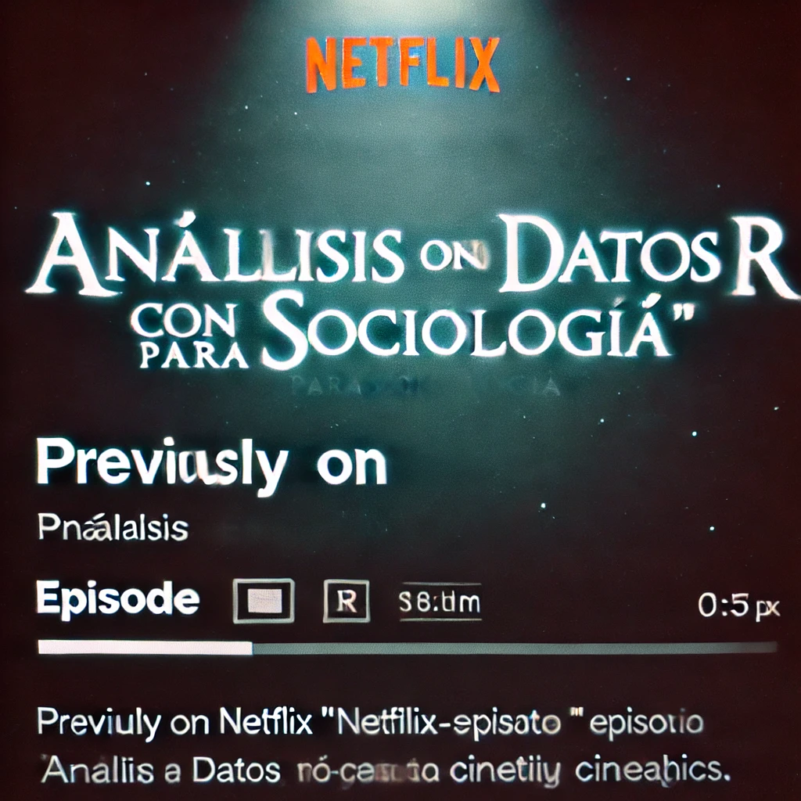
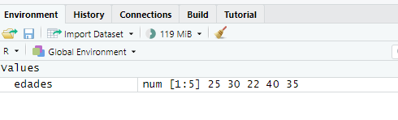
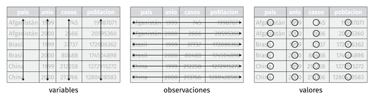

[1] 25 30 22 40 35Entornos, Objetos y Operadores en R
Análisis de Datos 1
Betsy Cohen
2027-03-03
Clase 2: Navegando R: Entornos, Objetos y Operadores
Hoy vamos a explorar los ladrillos fundamentales con los que construimos análisis de datos en R:
- RECAP: Entornos de trabajo: Vamos a repasar Scripts, Consola, Notebooks.
- Objetos: Vectores y Data Frames.
- Operadores: Cómo “darle órdenes” a R.
¡Comprender estos conceptos es clave para empezar a trabajar con datos en R!
RECAP!
Entornos de Trabajo en R
Cuando trabajamos en R, tenemos diferentes “espacios” o entornos para escribir y ejecutar código:
- Scripts (.R): Como vimos la clase pasada son archivos de texto para guardar secuencias de comandos. Ideal para análisis reproducibles.
- Consola: Espacio interactivo para ejecutar comandos uno a uno. Perfecto para probar y explorar.
- Notebooks (.Rmd o .ipynb): Documentos que combinan código, texto y resultados. Excelente para informes y presentaciones.
Scripts: Recetas de Análisis Reutilizables üìù
Retomemos este concepto fundamental:
- Los scripts de R son archivos de texto plano con extensión .R.
- Contienen una serie de comandos de R que se ejecutan en secuencia.
- Son como “recetas” detalladas para realizar un análisis.
- Reutilizables: Podemos volver a ejecutar el mismo análisis fácilmente. -
- Editables: Podemos modificar y mejorar el script.
- Documentados: Podemos agregar comentarios (#) para explicar el código. (un mensaje para tu vos del futuro)

Consola: Exploraci√≥n Interactiva y Pruebas Rápidas üßÆ
- La consola de R es un entorno interactivo.
- Ejecuta comandos línea por línea.
- Muestra los resultados inmediatamente después de cada comando.
- Ideal para:
- Experimentar: Probar diferentes comandos y funciones.
- Cálculos rápidos: Usar R como calculadora.
- Explorar datos: Ver partes de un objeto, comprobar resultados intermedios.
Notebooks: Informes Dinámicos y Presentaciones Interactivas üì∞
- Los Notebooks (R Markdown
.Rmdo Quarto.ipynbo.qmd) combinan:- Código R ejecutable: Bloques de código que se pueden ejecutar dentro del notebook.
- Texto: Explicaciones, interpretaciones, narrativa del análisis (en Markdown).
- Resultados: Tablas, gráficos, figuras generadas por el código, ¡integrados en el documento!
- Perfectos para:
Informes: Documentar un análisis de forma clara y reproducible.
Presentaciones: Mostrar análisis interactivos y dinámicos.
Aprendizaje: Experimentar con código y ver los resultados en contexto.
Ayuda en R
En el cuadrante de Output (abajo a la derecha) tenemos varias pestañas entre ella una que vamos a usar bastante la pestaña help Gracias al trabajo de la comunidad vas a notar que en general la documentación y ayuda de las funciones siempre te dan una descripción, detalles y ejemplos de usos.


Objetos en R: Los “Ingredientes” de tu Análisis
En R, todo lo que creamos y manipulamos son objetos. Pensá en ellos como los “ingredientes” que usas en una receta de cocina:
- Vectores: Listas ordenadas de elementos (números, texto, etc.). Como una lista de respuestas a una pregunta de encuesta.
- Data Frames: Tablas de datos, como hojas de cálculo. ¡Donde organizamos nuestros datos sociológicos!
Hoy nos vamos a centrar en Vectores y Data Frames, que son los más fundamentales.
1. Vectores: Listas de Datos üî¢
Un vector es una colección ordenada de elementos, todos del mismo tipo. Imagina una columna en una hoja de cálculo.
Ejemplo: Las edades de un grupo de personas encuestadas:
[25, 30, 22, 40, 35]
Creando Vectores con c()
Usamos la función c() (de “combine” o “concatenar”) para crear vectores:
Say my name: ponerle un nombre al vector
Para que podamos guardar y luego “llamar” nuestro vector vamos a necesitar ponerle un nombre. Y para ello en R utilizamos el símbolo <- o también cariñosamente le decimos flechita
De esta manera podemos nombrar nuestro vector edades
y luego podemos llamarlo
Say my name: ponerle un nombre al vector
Y esto es una gran ventaja porque por ej si queremos realizar alguna operación como por ejemplo sumarle un año a todas las edades simplemente haremos lo siguiente
Esta característica a en la que la operación se ejecuta sobre cada uno de los elementos del vector se denomina element-wise.
Entonces si realizamos una operación entre dos vectores se ejecutará entre los vectores con misma ubicación. Por ejemplo:
Pará pará pará
¿Dónde están los vectores que creamos?
Probalo en tu consola y tu IDE de R y después volvé a esta presenta

Pues a nuestro Global Enviroment!
En una “sección” que llamamos “Values”
Ahi también podemos ver una información importante sobre nuestro vector
R nos muestra el nombre del vector (en este caso edades) y el tipo o clase que en este caso es numeric.
Tipos de Vectores: No todos los “ingredientes” son iguales
Los vectores en R pueden almacenar diferentes tipos de datos:
- Numéricos (o
double): Números con decimales. Ej:c(25, 30.5, 22, 40, 35.8)(edades, ingresos). - Enteros (
integer): Números enteros. Ej:c(1, 2, 3, 4, 5)(número de hijos). - Caracteres (
character): Texto (strings). Ej:c("Juan", "Maria", "Pedro")(nombres, respuestas abiertas). - Lógicos (
logical): ValoresTRUEoFALSE. Ej:c(TRUE, FALSE, TRUE, TRUE)(¿votó en la última elección?). - Factores (
factor): Variables categóricas con niveles definidos. Ej:factor(c("Secundario", "Universitario", "Secundario"))(nivel educativo).
Num√©ricos: Cantidades y Medidas üìä
- Almacenan números, con o sin decimales, positivos o negativos.
- Ideales para representar variables cuantitativas: edad, ingresos, años de educación, etc.
Aprovechandon nuestro vector edades Podriamos preguntarle a R la edad de nuestro entrevistado más joven. Para eso vamos a usar la función min()
¡Ahora ustedes!
Creá tu vector con ingresos de hogares y realizá los siguientes cálculos usando estas funciones de R
´min()´ ´mean()´
¿Qué representá cada una? ¿Qué conclusiones sacarías acerca de esta muestra? Podes usar la ventana de ayuda integrada dentro de R ubicada en el panel inferior
Caracteres: Texto y Etiquetas üí¨
Otro tipo de dato que vamos a usar MUCHISIMO son los de tipo texto
- Almacenan texto, cadenas de caracteres (strings).
- Útiles para nombres, categorías nominales, respuestas de encuestas abiertas.
Veamos un ejemplo
[1] "CABA" "Buenos Aires" "Buenos Aires" "Buenos Aires" "Mendoza" Lógicos: Verdadero o Falso ✅ ❌
- Almacenan valores lógicos:
TRUEoFALSE. - Resultado de comparaciones, condiciones.
- Muy útiles para filtrar datos (los vas a adorar).
Por ejemplo podriamos querer saber si nuestros entrevistados estan en edad de votar
Factores: Categorías con Sentido
- Representan variables categóricas (nominales u ordinales).
- Definen niveles o categorías posibles.
- Ayudan a R a entender que una variable es categórica y no solo texto.
- Importante para análisis estadísticos y gráficos.
Vayamos con un clasico de la sociología
Characters vs Factores
Si miras el Global enbviroment ¿qué diferencias encontras entre los vectores niveles_educativos_caracter y niveles_educativos_factor?
2. Data Frames: los vectores se unen porque esa es la ley primera üóÉÔ∏è
Un data frame es la estructura de datos más importante en R para análisis sociológico.
- Similar a una tabla o hoja de cálculo en Excel
- Organiza datos en filas (observaciones) y columnas (variables).
- Cada columna puede ser de un tipo diferente (numérica, caracter, factor, etc.).
Creando Data Frames
Podemos crear data frames con la función data.frame() a partir de estos vectores:
Supongamos que tenemos tres vectores chacarcter, otro numerico y otro factorial
Usando data.frame() Nombramos a cada una de las variables indicando el nombre es la columna = nombre_del_vector
Estructura ‚ÄúTidy‚Äù de Data Frames üßπ
En el “universo tidyverse” (que usaremos mucho), trabajamos con data frames “tidy” o “ordenados”:
- Cada columna es una variable. (ej: nombre, edad, educación)
- Cada fila es una observación. (ej: cada persona encuestada)
- Cada celda contiene un único valor. (ej: la edad de Ana es 25)
¡Esta estructura facilita mucho el análisis y la manipulación de datos!
Seleccionando Partes de un Data Frame ✂️
Podemos acceder a partes específicas de un data frame usando corchetes [] o el símbolo $ (también le decimos “pesitos”):
Por posición (índices numéricos):
Traer el caso en la Primera fila, segunda columna:
Traer toda la primera fila:
Traer toda la segunda columna:
Operadores en R: Dando Órdenes a los Datos ⚙️
Los operadores son símbolos especiales que indican a R qué tipo de acción o cálculo debe realizar. Son como los “verbos” en el lenguaje de R.
Tenemos diferentes tipos de operadores:
- Aritméticos: Para cálculos matemáticos.
- Relacionales (o de comparación): Para comparar valores (¿mayor que?, ¿igual a?).
- De Asignación: Para asignar valores a objetos (¡ya los usamos con
<-!).
1. Operadores Aritméticos: Cálculos con Datos ➕ ➖ ✖️ ➗
2. Operadores Relacionales
>Mayor que<Menor que>=Mayor o igual que<=Menor o igual que==Igual a (¡ojo, dos iguales!)!=No igual a (distinto de)
Ejemplos con vectores:
[1] FALSE FALSE FALSE TRUE TRUE3. Operadores de Asignación
<-(Asignación “flechita”): Asigna el valor de la derecha al objeto de la izquierda. ¡Es el más común y recomendado!=(Asignación “igual”): También asigna valores. Funciona similar a<-, pero en algunos contextos puede ser menos claro.->(Asignación “flecha derecha”): Asigna el valor de la izquierda al objeto de la derecha. Menos común, menos legible.
En este curso, usaremos principalmente <- para asignaciones. ¡Es una buena práctica mantener la consistencia!
Resumen de la Clase 2: ¡Pilares de R!
Hoy aprendimos sobre:
- Entornos de trabajo: Scripts, Consola, Notebooks. Elige el adecuado para cada tarea.
- Objetos fundamentales:
- Vectores: Listas de datos del mismo tipo.
- Data Frames: Tablas para organizar datos sociológicos.
- Operadores: Para realizar cálculos y comparaciones con nuestros datos.
¡Con estos conocimientos, ya puedes empezar a crear y manipular datos en R! En la próxima clase, ¡vamos a importar datos reales y poner en práctica todo esto!
Pr√≥xima Clase: ¡Importando tus Datos a R! üöÄ
En la próxima clase, aprenderemos a:
- Importar datos desde archivos externos: CSV, Excel, etc.
- Explorar los datos importados: Ver su estructura, tipos de variables. :::